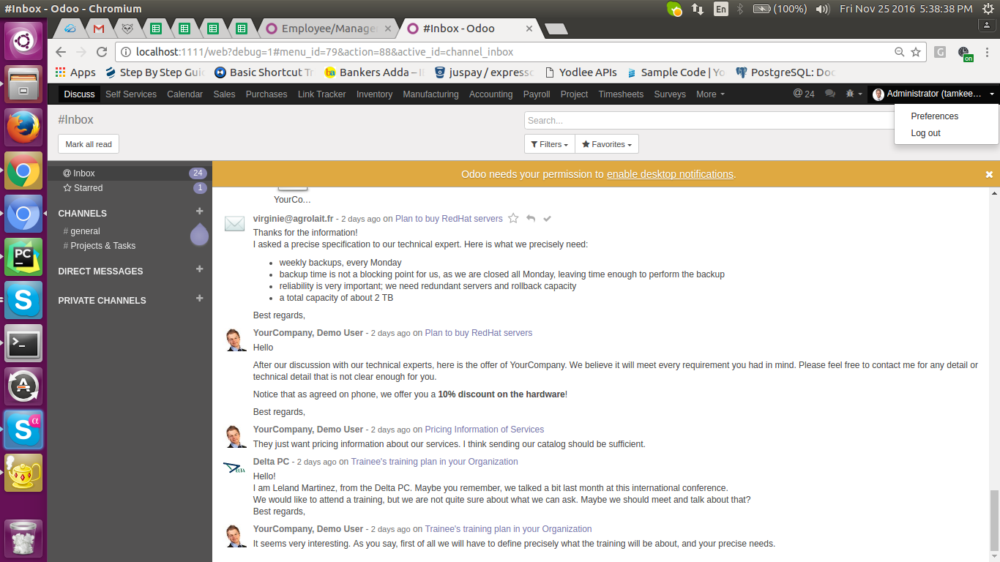

<section class="oe_container">
    <div class="oe_row oe_spaced">
        <h2 class="oe_slogan" style="color:#875A7B;">OI Support Software</h2>
        <div class="oe_span12">
            <div class="oe_demo oe_picture oe_screenshot">
            </div>
        </div>
    </div>
</section>
<section class="oe_container oe_dark">
    <div class="oe_row oe_spaced">
        <h2 class="oe_slogan" style="color:#875A7B;">Hide Extra Menu</h2>
        <h3 class="oe_slogan"></h3>
        <div class="oe_span6 text-justify oe_mt32">
            <span class="fa-2x pull-left"/>
            <p class="oe_mb32" style="margin-left:48px;">
			When you install this module it hide extra menu from user login main menu.
            </p>
        </div>
        <div class="oe_span6">
            
        </div>
    </div>
</section>

<section class="oe_container oe_separator">
</section>
